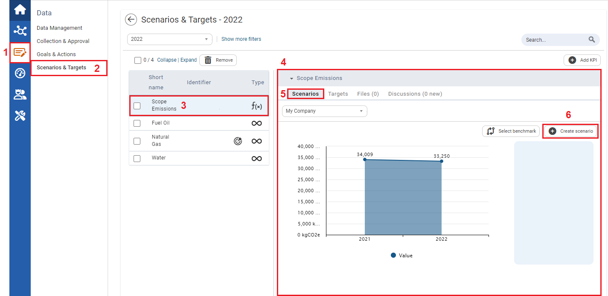
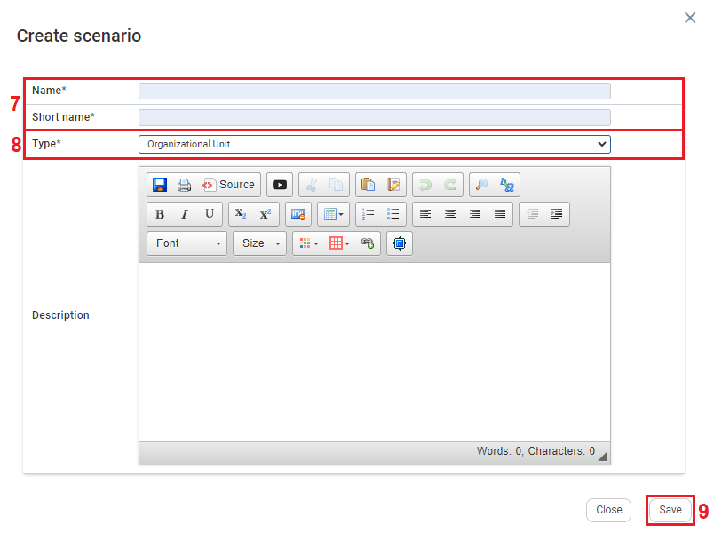

Create scenario. The Create Scenario window opens.
Create scenario. The Create Scenario window opens.
To create a Scenario for a Formula KPI using Organizational Unit

| 1 | On the left navigation panel, click Data. |
| 2 | Click Scenarios & Targets. |
| 3 | Select a formula KPI. |
| 4 | Information on the KPI is displayed to the right. |
| 5 | Click the Scenarios tab. |
| 6 | Click Create scenario. The Create Scenario window opens. |

| 7 | Fill in Name*, and Short name*. Note: Filling in Description is optional. |
| 8 | In the Type* dropdown textbox select Organizational Unit. |
| 9 | Click Save. A Scenario section is created for the KPI in the information section. |